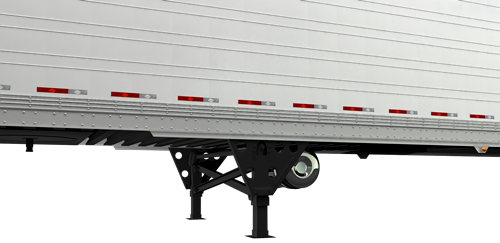

|  |
Características
-
Placa de acero de alta resistencia en el guitarrón, con agujeros y costillas en relieve.
-
Cargadores de refuerzos sobre el área de patines
-
La cruceta es montada de modo que las cargas de lado sean aplicadas por el centro de cada patín.
Ventajas
-
Mayor resistencia y menor peso.
-
Diseñado para soportar operaciones de uso rudo.
-
Capacidad de carga de lado más fuerte.
|